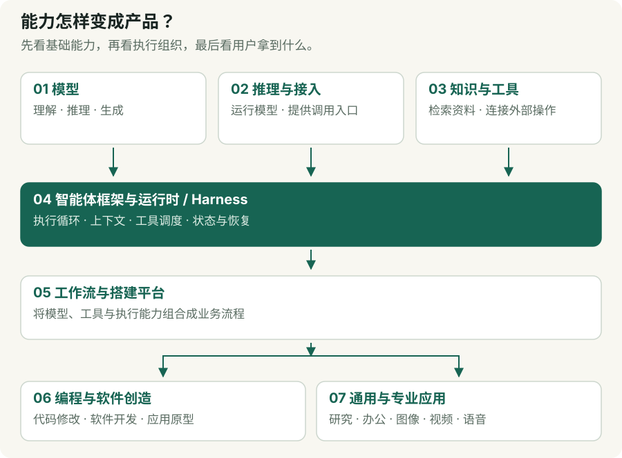
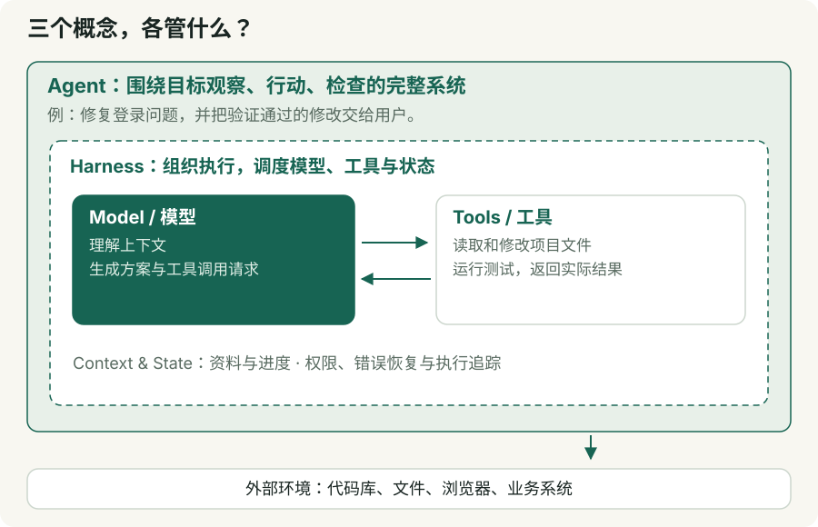
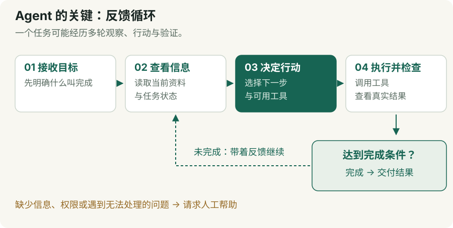
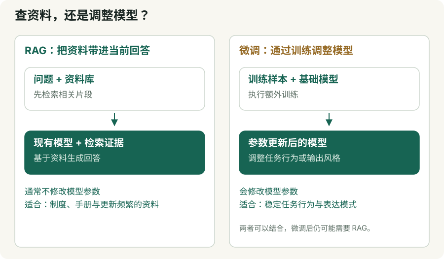
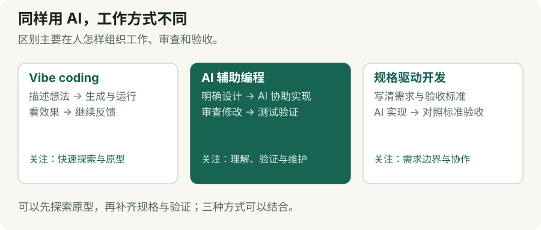

我们平时说“这个 AI 很厉害”，可能是在评价一个模型，也可能是在评价一整套软件系统。
这两者差别很大：模型负责理解、推理和生成；完整产品还要负责查资料、调用工具、保存进度、处理错误，以及把结果交到你手上。理解 AI 生态，关键就是弄清楚这些能力分别来自哪里。
本文从模型开始，把生态划分为七个观察层，收录 73 个代表模型、项目和产品，每层不少于 10 个，再解释 harness、agent、vibe coding 等常见术语。
资料查证时间为 2026 年 10 月 29 日。以下是按代表性、特色和实际用途挑选的学习地图，不是性能排行榜。模型以家族为单位介绍，避免把同一家族的多个版本重复计数；名称附官方链接，便于继续了解。
一、先看全貌：AI 生态如何分层
模型下面还有芯片、云计算、训练框架、数据和训练系统。它们决定模型如何被制造出来；本文重点讨论模型本身，以及模型如何变成可用产品。
| 观察层 | 回答的问题 | 可以怎样理解 |
|---|---|---|
| ① 模型层 | AI 能理解、推理和生成什么？ | 提供基础能力 |
| ② 推理与接入层 | 模型在哪里运行，怎样被调用？ | 把能力变成可访问的服务 |
| ③ 知识与工具层 | AI 如何获得外部信息、操作外部世界？ | 接上资料库和工具箱 |
| ④ 智能体框架与运行时层 | AI 如何连续执行任务并处理反馈？ | 组织执行循环 |
| ⑤ 工作流与搭建平台层 | 如何把 AI 接入业务流程？ | 组装自动化系统 |
| ⑥ 编程与软件创造应用层 | 如何让 AI 帮人开发软件？ | 面向软件工作的成品工具 |
| ⑦ 通用与专业应用层 | 普通用户怎样直接获得结果？ | 面向具体需求的产品 |
这里的“层”是一种理解方式，并非所有系统都严格逐层搭建。⑥和⑦实际上是应用层的两条分支；③中的工具也可能直接被应用调用。许多产品横跨多层，以下按主要用途归类。
评测、日志、权限、成本管理和安全控制则贯穿整个系统。

二、模型及其上层，哪些作品值得认识
① 模型层：提供理解、推理与生成能力
模型是经过训练得到的参数系统。输入文字、图片或其他信息后，它产生回答、代码、图像、音频，或者提出工具调用请求。
模型本身通常不等于聊天软件，也不天然拥有你的文件、浏览器和账户权限。
| 代表模型家族 | 简短介绍与典型用途 |
|---|---|
| GPT | OpenAI 的模型家族，覆盖通用理解、推理、编程及多模态任务，是多种助手和开发应用的能力来源。 |
| Claude | Anthropic 的模型家族，常用于文档分析、写作、编程和工具使用。 |
| Gemini | Google 的多模态模型家族，可用于文本、图像、音视频相关任务，并与 Google 开发生态结合。 |
| DeepSeek | 覆盖通用对话、推理和编程等方向；部分模型提供开放权重，兼顾 API 使用与部署研究。 |
| Qwen／通义千问 | 阿里巴巴的模型家族，覆盖语言、代码、视觉等方向，拥有丰富的开放模型生态。 |
| Kimi | 月之暗面开发的模型系列，代表方向包括复杂任务、代码和工具调用；需与同名助手产品区分。 |
| GLM | 智谱／Z.ai 的模型家族，覆盖语言、推理、编程及智能体相关任务。 |
| Mistral | 提供商用及开放权重模型，也覆盖代码、文档识别和语音等方向。 |
| Llama | Meta 的开放权重模型家族，是自建应用、微调和模型研究的重要基础之一。 |
| Grok | 提供通用对话、推理和多模态能力的模型家族，可通过 API 用于应用开发。 |
| FLUX | Black Forest Labs 的生成模型家族，以图像生成和编辑闻名，可用于视觉创作与素材生产。 |
| Stable Diffusion | 图像生成领域的重要模型家族，围绕它形成了丰富的微调、控制和本地创作工具生态。 |
需要注意：开放权重不自动等于完整开源，更不自动等于可以任意商用。 不同版本的代码、权重、训练资料和许可证可能不同。
② 推理与接入层：让模型真正跑起来
训练完成的模型，需要运行环境才能提供服务。这一层主要解决速度、显存、并发、部署和接口接入。
其中既有底层推理引擎，也有本地运行工具和云服务入口，它们解决的是同一阶段的不同问题。
| 代表作品 | 简短介绍与典型用途 |
|---|---|
| vLLM | 高吞吐模型推理与服务框架，适合团队部署多人同时调用的模型 API。 |
| SGLang | 面向语言和多模态模型的高性能服务框架，关注低延迟、缓存复用和并行推理。 |
| llama.cpp | 使用 C/C++ 实现的模型推理项目，支持多种硬件，适合本地与资源受限环境。 |
| TensorRT-LLM | NVIDIA 的大模型推理优化工具，适合围绕其 GPU 做性能优化。 |
| Ollama | 简化开放模型的获取、运行和调用，适合个人实验及搭建本地 AI 服务。 |
| LM Studio | 围绕开放模型提供桌面使用体验，适合希望通过图形界面探索本地模型的用户。 |
| Hugging Face Inference Endpoints | 将模型部署为托管推理端点，减少自行维护服务的工作。 |
| OpenRouter | 多模型 API 接入与路由平台，适合在统一入口比较、切换不同模型。 |
| Together AI | 提供模型推理、部署及训练相关云服务，适合开发者使用开放模型生态。 |
| Fireworks AI | 提供模型推理与定制服务，适合把模型能力接入实际应用。 |
这一层容易混淆的地方是：Ollama 不是一个模型，OpenRouter 也不是一个模型。 它们帮助你运行或接入模型。
③ 知识与工具层：让 AI 能查资料、做操作
模型训练时学到的知识有边界，也不会自动知道公司的内部制度、最新订单或你的日程。
这一层提供两类能力：找到相关资料，以及执行外部操作。
| 代表作品 | 简短介绍与典型用途 |
|---|---|
| Pinecone | 托管向量检索与知识基础设施，常用于企业知识库和语义搜索。 |
| Weaviate | 支持向量与混合检索的数据库，适合构建语义搜索和知识应用。 |
| Qdrant | 向量搜索引擎，可结合结构化条件筛选，适合带业务约束的相似内容检索。 |
| Milvus | 面向大规模向量检索的数据库，适合海量文本、图片等内容搜索。 |
| Chroma | 面向 AI 应用的搜索基础设施，可用于知识检索和应用原型。 |
| pgvector | 为 PostgreSQL 增加向量搜索能力，适合已有 PostgreSQL 系统的团队。 |
| Elasticsearch | 搜索引擎，支持关键词、向量和混合检索，适合结合现有企业搜索系统。 |
| Firecrawl | 将网页抓取并转换为适合 AI 处理的内容，适合研究、资料采集和知识库建设。 |
| Tavily | 面向 AI 应用提供搜索和网页信息获取能力，适合研究型智能体。 |
| Playwright | 浏览器自动化工具，可以打开网页、点击和填写表单；接入智能体后可成为操作工具。 |
向量数据库只是检索系统的一部分。资料清洗、权限过滤、关键词搜索和结果重排，同样影响答案质量。Playwright 则是通用自动化工具，其本身并不是 AI。
④ 智能体框架与运行时层：让 AI 持续推进任务
一次模型调用，通常是“一问一答”。复杂任务需要反复获取信息、执行操作、检查结果，再决定下一步。
这一层帮助开发者组织这样的循环。框架提供构建模块；harness 则更强调实际执行时，模型周围那套控制和管理机制。
| 代表作品 | 简短介绍与典型用途 |
|---|---|
| LangGraph | 用图和状态组织智能体执行，适合需要分支、恢复、人工介入的复杂任务。 |
| OpenAI Agents SDK | 提供构建智能体、工具调用、交接和追踪等能力，适合在应用内组织 agent。 |
| Claude Agent SDK | 将 Claude Code 的执行能力用于程序化应用，适合文件、代码和工具密集型任务。 |
| Google ADK | Agent Development Kit，用于构建、运行和评估智能体及多智能体系统。 |
| Pydantic AI | 强调类型、结构化结果与验证，适合需要把模型输出可靠接入业务代码的 Python 项目。 |
| CrewAI | 围绕角色、任务和流程组织智能体，适合研究、写作等分工协作场景。 |
| Microsoft Agent Framework | 微软的智能体与工作流开发框架，适合企业应用和多智能体编排。 |
| LlamaIndex | 强调数据接入、检索与智能体结合，适合围绕私有文档构建知识型应用。 |
| Haystack | 模块化 AI 应用框架，适合组合检索、路由、生成和智能体流程。 |
| DSPy | 用程序结构和评测优化模型系统，适合系统化改进提示与多步骤任务。 |
这十个项目并不全是“开箱即用的完整 harness”。它们覆盖从组件、优化框架到运行时的不同位置，不能只看是否支持 agent 就当作同类产品比较。
⑤ 工作流与搭建平台层：把 AI 组织成业务流程
这一层更接近业务人员和应用搭建者。它通常提供可视化界面、连接器、知识库、流程节点和发布入口。
| 代表作品 | 简短介绍与典型用途 |
|---|---|
| Dify | 集成模型、知识库、工具和工作流，适合搭建客服、知识助手及业务 AI 应用。 |
| Coze／扣子生态 | 提供智能体与工作流搭建能力；Coze Studio 是其中的开源项目，适合学习和自行部署。 |
| Langflow | 可视化连接模型、工具与数据组件，适合搭建 RAG 和智能体应用。 |
| n8n | 将业务系统、触发器、代码和 AI 节点连接起来，适合持续运行的自动化流程。 |
| Zapier Agents | 结合应用连接能力构建 AI 助手，适合跨多个办公软件执行任务。 |
| Make | 可视化自动化平台，可把应用、数据和 AI 模型组成业务流程。 |
| Microsoft Copilot Studio | 用低代码方式搭建和管理企业智能体，连接组织数据并发布到工作渠道。 |
| Power Automate | 结合工作流、AI 与机器人流程自动化，适合审批、文档及桌面业务操作。 |
| Relevance AI | 面向业务团队搭建智能体和自动化系统，典型场景包括销售、客户运营与研究。 |
| Workato | 面向企业集成、自动化和智能体编排，适合连接多个核心业务系统。 |
工作流与智能体可以相互嵌套。 比如整体退款流程固定，但“分析客户诉求”这一步交给智能体；分析完成后，再回到固定审批流程。
⑥ 编程与软件创造应用层：从辅助写代码到交付软件
这一层与 harness、agent、vibe coding 的关系最直接。它们都能帮助写软件，但有的围绕现有代码库工作，有的更强调通过对话创建新应用。
| 代表作品 | 简短介绍与典型用途 |
|---|---|
| Cursor | 将 AI 深度融入代码编辑与项目工作，适合持续开发、跨文件修改和理解代码库。 |
| Claude Code | 可阅读项目、编辑文件并运行工具的编程智能体，适合修复问题和完成开发任务。 |
| OpenAI Codex | 面向软件任务的智能体产品与工具生态，适合代码修改、调试及围绕项目开展工作。 |
| GitHub Copilot | 覆盖代码建议、对话和智能体任务，与编辑器及 GitHub 工作流程结合。 |
| Devin Desktop／Windsurf 产品脉络 | 围绕本地及云端编程智能体提供工作界面；原 Windsurf 官网目前跳转至 Devin Desktop。 |
| Aider | 终端中的 AI 结对编程工具，结合代码库信息与 Git，适合喜欢命令行的开发者。 |
| Cline | 开源编程智能体生态，支持模型选择和工具扩展，适合希望掌握配置与执行过程的用户。 |
| Replit | 将应用创建、运行和发布放在云端平台中，适合从想法快速做到可体验的应用。 |
| Lovable | 通过自然语言构建应用与网站，适合产品原型、内部工具和早期业务验证。 |
| Bolt | 对话式网站与应用搭建工具，适合快速生成、运行和迭代网页项目。 |
| v0 | Vercel 的 AI 应用构建工具，可用于界面生成、Web 应用搭建和发布。 |
同一个工具既可以用于快速试验，也可以用于严谨的软件工程。是否属于 vibe coding，取决于使用方式，不能仅凭产品名称判断。
⑦ 通用与专业应用层：直接解决用户问题
用户通常不需要关心底层部署和框架，而是直接告诉产品想完成什么。
| 代表作品 | 简短介绍与典型用途 |
|---|---|
| ChatGPT | 综合型 AI 助手，覆盖问答、写作、学习、资料分析及工具辅助工作。 |
| Claude | 面向写作、分析、代码和文档工作的助手，Artifacts 可承载可查看、可迭代的成果。 |
| Gemini | Google 的 AI 助手产品，适合多模态交互及结合其生态开展工作。 |
| Perplexity | 以搜索和信息研究为主要入口，适合查找资料、了解主题并追踪来源。 |
| Gemini Notebook，原 NotebookLM | 围绕用户提供的资料开展问答、学习和整理，适合阅读文档与研究材料。 |
| Manus | 面向多步骤任务的智能体产品，可用于研究、演示文稿和网站等成果制作。 |
| Notion AI | 将 AI 放进团队知识与协作环境，覆盖搜索、会议记录和工作自动化。 |
| Gamma | 面向演示文稿、文档等视觉表达，适合将内容快速组织成可展示的成果。 |
| Runway | 面向视觉内容生产的创作平台，适合视频生成、编辑和创意制作。 |
| ElevenLabs | 提供语音生成、转写、配音和语音智能体能力，适合内容生产与语音交互。 |
这里再次出现 Claude、Gemini，是因为同一个品牌可以同时指模型家族和应用产品。判断讨论对象时，要问清楚：说的是模型 API，还是用户正在使用的软件？
三、最关键的四个术语：model、harness、agent、vibe coding

1. Model：模型，是能力来源
模型根据收到的上下文，产生文本、代码、多模态内容或工具调用请求。
例如，你提供一份报错记录，模型可以分析原因、提出修改方案。但要读取真实项目、执行修改并运行测试，还需要外部系统配合。
适用场景包括文本分类、翻译、摘要、问答、内容生成，以及智能体中的推理与决策。
2. Harness：让模型持续工作的运行控制系统
Harness 原意与固定、控制设备有关。在 AI 智能体语境里，可以理解为围绕模型搭建的执行控制系统。
它通常负责：
- 组织模型调用和执行循环。
- 准备上下文，处理历史信息。
- 把工具调用交给实际工具执行。
- 保存进度、处理错误并恢复任务。
- 管理权限、人工确认、日志和停止条件。
各家的定义边界略有不同，但核心都是：让模型在真实环境里持续、可管理地推进工作。 OpenAI 的运行时文档也将工具路由、状态、恢复和追踪等列为 harness 的职责。官方说明
以“修复登录问题”为例，模型可能提出修改方案；harness 负责把项目文件交给它、执行修改、运行测试，再把失败信息送回模型，继续下一轮。
适用场景：代码修复、长时间研究、批量文件处理，以及需要跨多轮执行的任务。
3. Agent：围绕目标观察、行动并利用反馈的系统
Agent 通常译为“智能体”。在本文语境中，它指使用模型，根据任务状态选择行动，并根据结果继续推进的系统。
典型循环是：

例如，“告诉我怎样分析销售数据”主要是问答；“读取这些销售表，找出异常、生成图表并保存报告”则可能需要智能体执行。
Agent 不必拥有无限权限，也不必由多个角色组成。一个只允许读取资料、生成草稿的系统，同样可以是 agent。
适用场景：调研、数据处理、软件开发、运营协助和需要动态选择步骤的任务。
4. Vibe coding：通过描述、运行和反馈来做软件
Vibe coding 通常译为“氛围编程”或“凭感觉编程”，由 Andrej Karpathy 在 2025 年提出。
它原本强调：主要通过自然语言指挥 AI，运行后看效果，继续描述修改，较少审读生成的代码。后来它也被宽泛地用于指代自然语言开发。Simon Willison 专门讨论过这种用法变化。术语辨析
一个典型过程是：
“做一个个人读书网站。”
“首页再简洁一点。”
“这里报错了，帮我修好。”
“加上按作者筛选。”
它适合快速探索想法、个人小工具和早期原型。若项目需要长期维护，就还要补上代码理解、测试、权限设计和运维等工程工作。
这四个词的关系可以这样记：
| 术语 | 关注点 | 类比 |
|---|---|---|
| Model | 有什么理解和生成能力 | 发动机 |
| Harness | 如何组织持续运行 | 控制与运行系统 |
| Agent | 如何围绕目标采取行动 | 执行任务的整套系统 |
| Vibe coding | 人如何借助 AI 创造软件 | 一种工作方式 |
这些类比只帮助理解，边界仍以具体系统为准。
四、其他常见术语，以及什么时候会用到
围绕模型与输入
| 术语 | 通俗解释 | 场景应用 |
|---|---|---|
| LLM，大语言模型 | 以语言理解和生成为核心的模型。 | 写作、问答、分类、代码生成。 |
| Multimodal，多模态 | 能处理文字、图片、声音、视频等多种信息。 | 看截图找问题、分析录音与画面。 |
| Token，词元 | 模型处理信息的基本单位，与汉字或单词不一一对应。 | 理解输入长度、输出长度和调用成本。 |
| Context window，上下文窗口 | 一次处理时可容纳的信息范围。 | 判断能否放入长文档或较多项目资料。 |
| Prompt，提示词 | 给模型的指令、问题、约束和示例。 | 指定任务、语气及输出格式。 |
| Prompt engineering，提示工程 | 设计和验证提示的方式。 | 改善分类准确率、减少格式错误。 |
| Context engineering，上下文工程 | 决定任务每一步给模型哪些信息。 | 选择相关代码、检索资料和历史结果。 |
| Inference，推理运行 | 使用训练好的模型产生输出；这里的“推理”不一定特指逻辑思考。 | 在线问答、本地模型运行和 API 服务。 |
围绕知识、工具与连接
| 术语 | 通俗解释 | 场景应用 |
|---|---|---|
| Embedding，向量表示 | 将内容转换为可计算相似度的数值表示。 | 找相似文档、图片或商品。 |
| RAG，检索增强生成 | 先找相关资料，再将资料提供给模型生成答案。 | 企业知识库、产品手册问答。 |
| Reranker，重排模型 | 对初步检索结果重新排序。 | 减少无关资料，提高引用质量。 |
| Tool calling／Function calling | 模型提出结构化工具调用请求，由外部系统执行。 | 查订单、运行计算、读取文件。 |
| MCP，模型上下文协议 | 连接 AI 应用与外部工具、数据和提示的标准协议。 | 让助手连接数据库、文件或业务系统。 |
| Skill，技能 | 某类任务的可复用操作知识，可能含说明、脚本和模板；各产品实现不同。 | 按团队规范制作报告或执行代码审查。 |
| Memory，记忆 | 在当前对话之外保存并在以后使用的信息。 | 保存偏好、项目约定和任务历史。 |
| Fine-tuning，微调 | 用额外训练调整模型参数。 | 学习特定分类任务或稳定的表达风格。 |
MCP 是连接协议，不是模型，也不会自动赋予工具权限。MCP 官方介绍
RAG 通常不修改模型参数；微调会修改。最新制度、频繁更新的资料，往往适合通过检索提供；稳定行为的学习则可能考虑微调。

围绕任务执行与质量
| 术语 | 通俗解释 | 场景应用 |
|---|---|---|
| Workflow，工作流 | 预先组织步骤、条件和数据流。 | 收到表单后分类、生成草稿并进入审批。 |
| Orchestration，编排 | 协调模型、工具、智能体和工作流的执行关系。 | 安排研究、写作、校对的先后与交接。 |
| Agentic workflow，智能体式工作流 | 在流程中引入由模型动态选择的步骤。 | 流程固定，但允许 AI 决定还需查询什么。 |
| Multi-agent，多智能体 | 多个智能体分工或协作。 | 研究与复核分离；也会增加通信成本。 |
| Sandbox，隔离环境 | 为代码和工具提供受限制的运行空间。 | 让智能体测试代码、处理文件。 |
| Human-in-the-loop，人在回路 | 在部分步骤由人判断、补充或批准。 | 对外发送、付款、重要数据修改。 |
| Guardrails，约束与防护 | 对输入、输出及行动施加限制。 | 限制可用工具、检查敏感数据。 |
| Evals，评测 | 用任务和指标检查系统表现。 | 比较模型、提示或 harness 的修改效果。 |
| Tracing，执行追踪 | 记录模型调用、工具操作和中间结果。 | 找到失败步骤、分析延迟与成本。 |
| Hallucination，幻觉 | 生成看似可信、实际缺乏依据或错误的内容。 | 检查引用、数字和事实是否可验证。 |
| Grounding，依据约束 | 让输出建立在可核实的资料或观察上。 | 要求答案引用文件和查询结果。 |
| AI-assisted coding，AI 辅助编程 | 人使用 AI 写代码，并对设计与验证负责。 | 日常开发、重构和测试生成。 |
| Spec-driven development，规格驱动开发 | 先明确需求和验收标准，再让 AI 实现。 | 团队项目、复杂功能和长期维护的软件。 |
五、用三个真实场景，把这些概念连起来
场景一：制作一份有出处的竞品报告
需求：“比较五家产品，整理定价、功能和目标客户，附上来源。”
系统可能这样工作：
| 环节 | 对应概念 |
|---|---|
| 理解需求，提出比较维度 | Model |
| 搜索官网和帮助文档 | Tools |
| 提取网页、找相关段落 | 知识获取、RAG |
| 发现缺失信息后继续查找 | Agent |
| 保存进度、重试失败请求、限制执行时长 | Harness |
| 检查每项结论是否有出处 | Grounding、Evals |
| 生成可阅读的报告 | 应用与成果交付 |
如果你只是让 AI 写一个报告提纲，直接对话就可能足够。需要它持续查证、补齐资料并生成文件时，智能体系统的价值才更明显。
场景二：建立公司内部知识助手
需求：“员工可以询问报销、休假和采购制度，答案要附原文。”
关键通常是：
- 整理有效制度，移除过期文件。
- 根据员工权限检索资料。
- 把相关原文交给模型。
- 生成带出处的答案。
- 找不到依据时说明资料不足。
这里 RAG、资料质量和权限设计 往往比复杂的多智能体结构更关键。可视化平台能简化搭建，但不能替你保证原始制度正确。
场景三：从一句话做出一个读书应用
需求：“做一个能记录书籍、评分并按作者筛选的应用。”
可以采用不同工作方式：
| 工作方式 | 人主要负责什么 | 典型特点 |
|---|---|---|
| Vibe coding | 描述想法，运行后反馈效果 | 适合迅速探索和做原型 |
| AI 辅助编程 | 理解设计，审查代码，验证结果 | 适合持续开发 |
| 规格驱动开发 | 先写清数据、行为和验收标准 | 适合需求明确、协作较多的项目 |
三种方式可以出现在同一个项目中。例如先通过 vibe coding 验证界面，再把需求整理成规格，进入可测试、可维护的开发流程。

六、面对这么多工具，应该怎样选择
先判断任务，再选择需要的层。
| 你的目标 | 优先了解什么 | 可以从哪些代表开始 |
|---|---|---|
| 学习、写作、日常分析 | 成品助手 | ChatGPT、Claude、Gemini |
| 搜索资料、了解一个新领域 | 搜索与研究应用 | Perplexity、Gemini Notebook |
| 快速做一个网页或应用原型 | 对话式应用搭建 | Lovable、Bolt、Replit、v0 |
| 在现有项目里持续开发 | 编程智能体与编辑器 | Cursor、Claude Code、Codex、Copilot |
| 搭建公司知识助手 | RAG、数据权限、应用平台 | Dify、Langflow、LlamaIndex |
| 把多个办公系统串起来 | 工作流与连接器 | n8n、Make、Zapier、Workato |
| 在本地尝试开放模型 | 本地运行与推理工具 | Ollama、LM Studio、llama.cpp |
| 开发复杂、可恢复的智能体 | 框架、harness、评测 | LangGraph、Agents SDK、ADK |
选择时可以依次问四个问题：需要生成什么结果？需要哪些外部资料？需要执行哪些操作？怎样判断任务完成？
这四个问题能帮助你分辨：眼前的问题是模型能力不足、资料没有提供、工具没有接上，还是执行与验证机制需要改进。
来源与编辑说明
本文由 AI 辅助整理，依据 2026 年 10 月 29 日查阅的公开资料编写。各代表作品名称链接至官网、官方文档或官方仓库，作为对应简介的来源入口。收录代表性不等于性能排名，也不代表逐项安装或实测。七个观察层是教学分类；框架、运行时与应用存在交叉。模型与产品可能更名、停用或调整能力，使用前请复核对应官方页面。